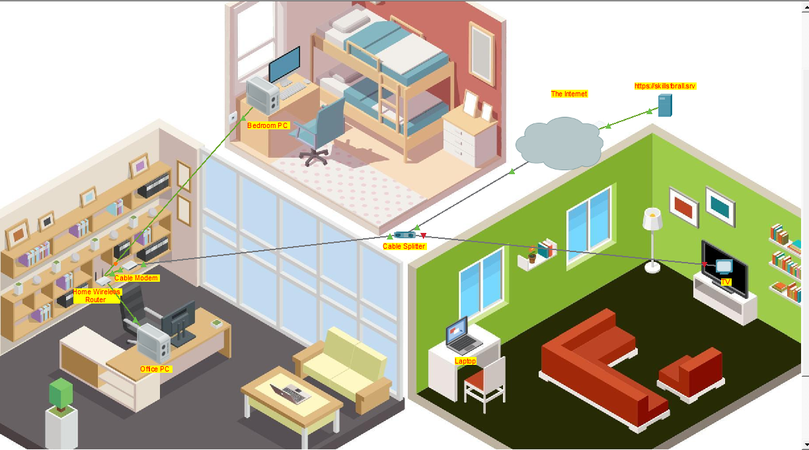

Networking Project
Home Network Design & Configuration
Two small home networks designed and configured using Cisco Packet Tracer to apply IP addressing, device configuration and connectivity testing in practice.

The networking problem
Devices cannot communicate correctly on a network simply because they are physically connected. They require appropriate IP addressing and network configuration to identify each other and exchange data.
This project focused on designing small home network environments and correctly configuring the connected devices so that reliable communication could take place.
What I configured
I designed and configured two small home network scenarios using Cisco Packet Tracer. I planned the network structure, connected the required devices and assigned appropriate IP addresses to the hosts.
After configuring the devices, I tested communication between hosts and corrected addressing or connectivity problems where necessary. The exercise allowed me to apply IP addressing and network troubleshooting practically rather than only studying them theoretically.
How I approached the network
Tools & concepts
- Cisco Packet Tracer
- IP Addressing
- TCP/IP
- LAN Configuration
- Network Topology
- Connectivity Testing
- Network Troubleshooting
What I learned
This project improved my understanding of how IP addressing works in practice and how devices are organised within a network. It also taught me to troubleshoot connectivity problems systematically instead of changing several settings at once.
If I developed the project further, I would introduce multiple subnets, routing between networks and DHCP. This would extend the exercise beyond basic host connectivity and provide experience with more realistic network configurations.